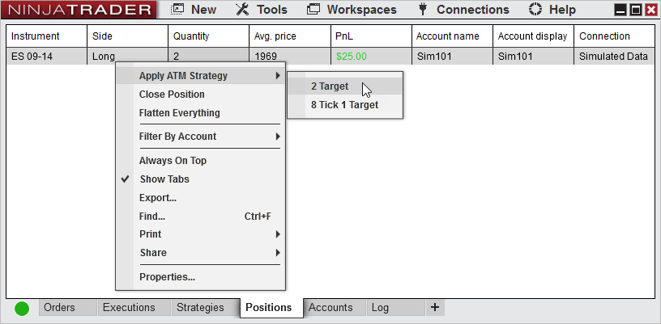
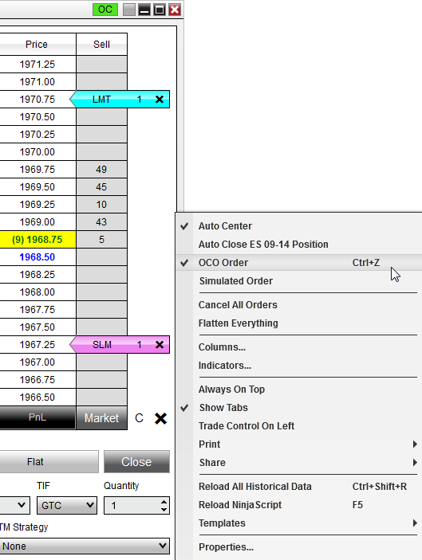

FAQ
Listed below are some common questions concerning building and implementing ATM Strategies.
 Do I need to turn on OCO order to use the ATM Strategies?
Do I need to turn on OCO order to use the ATM Strategies?
No, the Stop Loss and Profit Target orders submitted automatically through an ATM Strategy are OCO by default meaning that when your target is filled the stop will automatically be cancelled. The OCO function in each of the order entry windows can be used to manually link orders you place.
Please see the Submitting Orders section for more information and examples of the OCO function, or attend one of our free live training events to see further examples. |
 Does NinjaTrader need to be connected for ATMs to work?
Does NinjaTrader need to be connected for ATMs to work?
Yes, for an ATM to activate and for it's functions to operate, NinjaTrader needs to be connected. |
 Is it possible to run concurrent ATM Strategies in the same market and the same account?
Is it possible to run concurrent ATM Strategies in the same market and the same account?
Absolutely, NinjaTrader's Strategy Selection Modes allow you to limit the display in the SuperDOM so that you can run concurrent ATM Strategies. One of the great features of NinjaTrader is its ability to manage multiple virtual positions in the same market. For example, this allows you to manage a long and short position in the same market simultaneously.
Here is how this is accomplished:
•Open 2 SuperDOMs and set them both to the same market •Right click in one of the SuperDOMs and select the menu "Properties" •Set the 'ATM Strategy selection mode' parameter to "DisplaySelectedAtmStrategyOnly" •Repeat the last two instructions on the second SuperDOM •Submit a buy order to open a long position in the first SuperDOM •Submit a sell order to open a short position in the second SuperDOM
For more information please see the ATM Strategy Selection Mode section of the user help guide, or attend one of our free live training events. |
 Can I have my Auto Trail loosen as I gain ticks in profit?
Can I have my Auto Trail loosen as I gain ticks in profit?
Your Stop Strategy will never move your Stop Loss backward. The Stop Strategy will only move your stop closer to the current trading price.
Example: If the first step of your Auto Trail has the Stop Loss trailing by 5 ticks and then the second step of the Auto Trail tells the Stop Loss to trail by 10 ticks the Stop Loss will simply stay at its current price point until there is a 10 tick spread between the Stop Loss and the current trading price and then begin to trail by 10 ticks. The Stop Loss will not move backwards when the second step of the Auto Trail is activated.
For more information on the Auto Trail feature please see the Auto Trail section of the user help guide or attend one of our free live training events. |
 Why don't the following ATM Strategy parameters work?
Why don't the following ATM Strategy parameters work?
When building an ATM Strategy each Profit Target must be greater than the Profit Target before it. Example: The Profit Target for 1 Target must be less than the Profit Target for 2 Target. Also each Stop Loss must be must be equal to or greater than the Stop Loss before it. Example: The Stop Loss for 1 Target must be equal to or less than the Stop Loss for 2 Target. The Parameters listed below show the correct way to enter the values listed above.
Please see the ATM Strategy Parameters section of the user help guide for further information. |
 Can I use the Auto Breakeven and Auto Trail strategies together?
Can I use the Auto Breakeven and Auto Trail strategies together?
Absolutely, NinjaTrader gives you the flexibility to use these strategies alone or to combine them. However, when using these features together please be aware of the following: •The Stop Strategy will not move your Stop Loss backward it will only move it closer •The Profit Trigger for your Auto Trail must be higher then the Profit Trigger for your Auto Breakeven |
 How do I add an ATM Strategy to an open position?
How do I add an ATM Strategy to an open position?
If you have opened a position which is currently unprotected by an ATM Strategy, you can easily add an pre-defined ATM Strategy to that position from the Positions tab by right clicking on the instrument row, selecting Apply ATM Strategy and selecting the desired pre-defined ATM Strategy Template from this sub-menu.
 |
 Can I manually bracket a position without using an ATM Strategy?
Can I manually bracket a position without using an ATM Strategy?
Of course! You are not required to use a pre-set ATM Strategy if you do not want to. If you have an open position without an ATM Strategy attached, and you wish to add limit and stop orders to protect the position follow these steps:
•Set the ATM strategy in the ATM Strategy selection drop down box to a value of <None> •Right click in the SuperDOM and enable OCO order placement by selecting the menu name "OCO Order" •Then place a limit order where you want to exit at a profit •Then place a stop order where you want to exit at a loss •Lastly, right click again and select the menu item "OCO Order" to disable the OCO order placement
Now you have a target and a stop placed protecting your open position, and when one of these orders is filled the other will be cancelled automatically.
 |
 How do I make one target a "runner" so that it has a Stop Loss only and no Profit Target?
How do I make one target a "runner" so that it has a Stop Loss only and no Profit Target?
If you want a target in your ATM Strategy to have a Stop Loss only then set the Profit Target to zero. |
 What happens as one of my ATM orders are rejected?
What happens as one of my ATM orders are rejected?
If an ATM Strategy Entry is rejected, the stops and targets for the Entry will not be entered. If a Stop Loss or Profit Target order is rejected, all Stop Losses and Profit Targets for the ATM will be canceled. This includes all Stop Losses and Profit Targets to an ATM you are scaling into. |